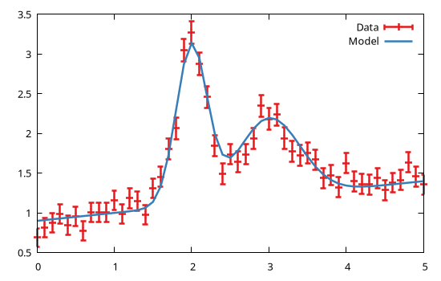

Parameter constraints
Models are characterized by parameters whose values are modified during fitting until a convergence criterion is met, and the best fit values are identified. In many cases, however, the parameters can not vary arbitrarily but should satisfy some constraints for their values to be meaningful. GFit.jl supports the definition of parameter constraints in two flavours:
- the parameter can be fixed to a specific value, or limited in a range of values;
- the parameter can be dynamically calculated, based on other parameter values.
In the latter case the parameters are said to be patched through a mathematical relationship.
A parameter constraint is defined by directly modifiying the structure of the corresponding GFit.Parameter structure. Note that such structure provides two field for the associated numerical value:
val: is the parameter value which is being varied by the minimizer during fitting. The value set before the fitting is the guess value. The value after fitting is the best fit one;actual: is the actual parameter value, as calculated by the patch expression. Note that the value will be overwitten at each model evaluation, hence setting this field has no effect.
The val and actual values are identical if no patch constraint has been defined.
Example
The following shows how to implement the afore-mentioned constraints (note that here we use the GFit.mock() function to generate Generate mock datasets):
using GFit
dom = Domain(0:0.1:6)
model = Model(dom, :l1 => GFit.Gaussian(1, 2, 0.2),
:l2 => GFit.Gaussian(1, 3, 0.5),
:bkg => GFit.OffsetSlope(0.5, 1, 0.1),
:main => SumReducer(:bkg, :l1, :l2));
data = GFit.mock(Measures, model)
res = fit!(model, data)
and can not be modified during the fitting process. To fix a Parameter object simply set its fixed field to true;
- limited range: the parameter is allowed to vary only within a range limited by the
lowandhighfields values; - the current parameter value can be constrained to be equal to that of another parameter with the same name, but belonging to another component within the same model. To establish such link simply set the component name in the
patchfield; - the current parameter value can be dynamically calculated by a mathematical expression involving all other parameters within the same model. In this case the
patchshould be set to a@λfunction with a single argument. The parameter is au
containing both the parameter numerical value and the constraint prescriptions. Note that
The current value, in particular, is modified during the fitting process to minimize the differences between the model and the data. The possible values for each parameter can be either unspecified (i.e. the value can be anything from -Inf to +Inf) or subject to a number of constraints.
The possible constraints are:
- fixed parameter: the parameter is fixed to a specific value and can not be modified during the fitting process. To fix a
Parameterobject simply set itsfixedfield to true; - limited range: the parameter is allowed to vary only within a range limited by the
lowandhighfields values; - the current parameter value can be constrained to be equal to that of another parameter with the same name, but belonging to another component within the same model. To establish such link simply set the component name in the
patchfield; - the current parameter value can be dynamically calculated by a mathematical expression involving all other parameters within the same model. In this case the
patchshould be set to a@λfunction with a single argument. The parameter is au
- model parameters can be fixed to a specific value, limited in an interval, and/or be dynamically linked (patched) to the values of other parameters (see Parameter constraints);